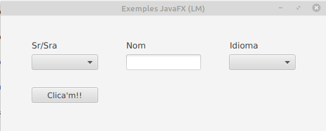

ChoiceBox és part del paquet JavaFX. Mostra un conjunt d’elements i permet a l’usuari seleccionar una sola opció i mostrarà l’element seleccionat actualment en la part superior. ChoiceBox per defecte no té cap element seleccionat llevat que se seleccione el contrari.
Els constructors de la classe ChoiceBox són:
Els mètodes que mes sol utilitzar són:
El codi fxml del checkbox seria:
<ChoiceBox fx:id="choiceBox" layoutX="383.0" layoutY="65.0" prefHeight="26.0" prefWidth="111.0" AnchorPane.rightAnchor="52.0" />
